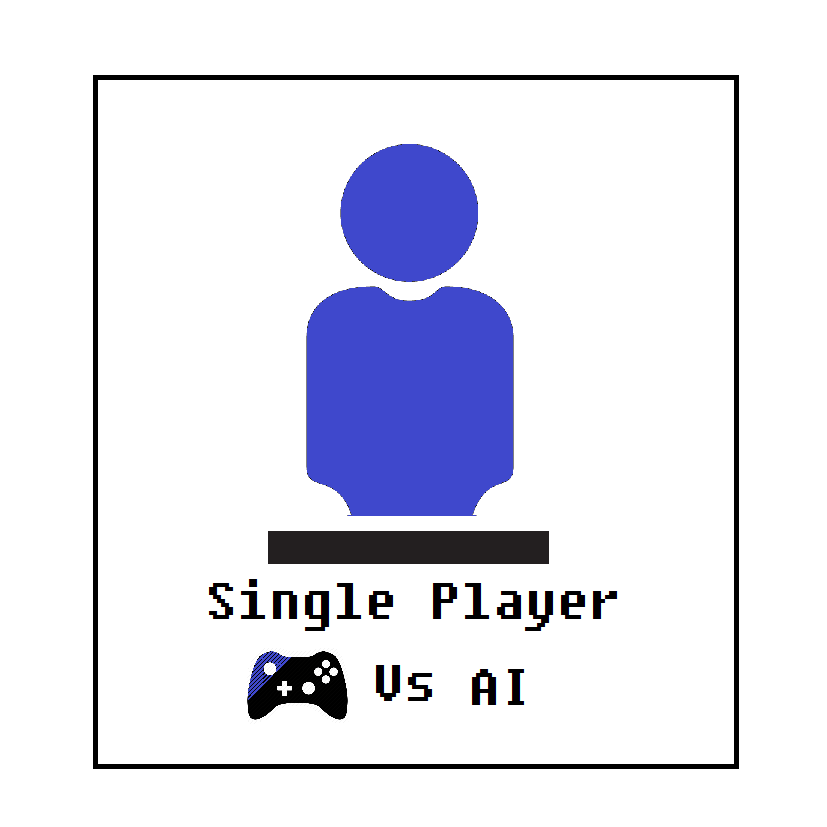
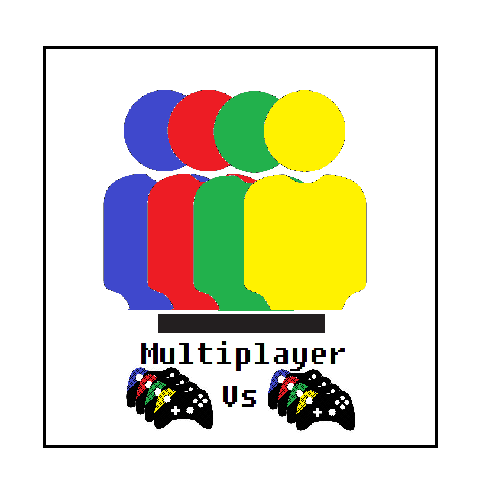
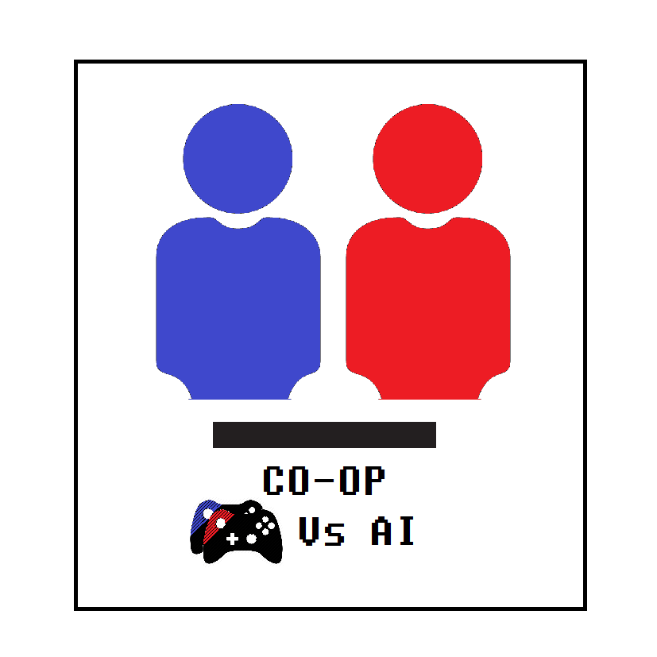

Fisrt person shooter
A First-person shooter (FPS), azaz a belső nézetű lövöldözős játék a videojátékok egy olyan műfaja, ahol a játékos belső nézetből, a főhős szemén keresztül látja az eseményeket. A legtöbb lövöldözős játékhoz hasonló tulajdonságokkal rendelkezik, az akciójátékok egy alfajának tekinthető. Ezen műfaj népszerűsége az 1992-es, id Software által fejlesztett, Wolfenstein 3D megjelenése óta töretlen, a mai napig az egyik legnépszerűbb számítógépes játékfajta az egész világon. Ugyanez a fejlesztőcsapat adta ki később, 1999-ben, a Quake III Arena című játékot, amely igazi áttörést hozott a többjátékos módot szórványosan támogató FPS-ek világában, mivel csakis erre a játékmódra volt kihegyezve, nem volt benne hagyományos, előre megírt történetre épülő egyjátékos mód, de ilyen volt többek mellett például az Unreal Tournament is. Persze ezekkel is lehet egyedül játszani, a számítógép által irányított ún. botok ellen. Azóta az internetes adatátviteli sebesség növekedésének köszönhetően, mely az irányítás és a grafikai megjelenítés fejlődését is nagyban elősegítette, rengetegen játszanak az interneten keresztül olyan online játékokat, mint a Counter-Strike vagy a Battlefield 1942, amelyek csakugyan többjátékos FPS-ek. Később a Halo sorozat ért el kiemelkedő kritikai- és közönségsikereket, mint konzolos belső nézetű lövöldözős játék. A 21. századra a first-person shooter az egyik legnépszerűbb videojáték műfajjá vált.
Műfajai


Tipusai

Singleplayer (Egyjátékos)
Az egyjátékos mód olyan játékot vagy játékmódot jelent a videojátékokban, amikor az emberi játékos a gép ellen játszik, a játékprogram által adott és változtatott szituációk jelentik a megoldandó problémát.
Példák

Multiplayer (Többjátékos)
Az többjátékos mód olyan játékot vagy játékmódot jelent a videojátékokban, amikor az emberi játékosok más emberi játékosok ellen játszanak és az adott feladatot próbálják minél jobban elvégezni.
Példák
Játékmodok

Co-op (Együttműködő)
Az együttműködő mód olyan játékot vagy játékmódot jelent a videojátékokban, amikor 2-4 emberi játékos a gép ellen játszik és a kitűzött feladat elvégzése a cél.
Példák
Singleplayer (Egyjátékos)
Az egyjátékos mód olyan játékot vagy játékmódot jelent a videojátékokban, amikor az emberi játékos a gép ellen játszik, a játékprogram által adott és változtatott szituációk jelentik a megoldandó problémát.
PéldákMultiplayer (Többjátékos)
Az többjátékos mód olyan játékot vagy játékmódot jelent a videojátékokban, amikor az emberi játékosok más emberi játékosok ellen játszanak és az adott feladatot próbálják minél jobban elvégezni.
Példák JátékmodokCo-op (Együttműködő)
Az együttműködő mód olyan játékot vagy játékmódot jelent a videojátékokban, amikor 2-4 emberi játékos a gép ellen játszik és a kitűzött feladat elvégzése a cél.
Példák